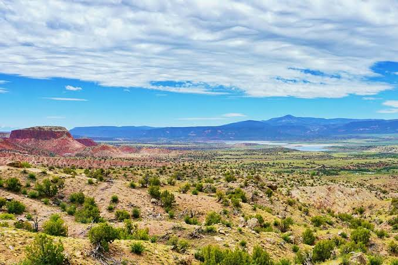

New Mexico eingedeutscht bzw. veraltet auch Neu-Mexiko oder Neumexiko ist ein Bundesstaat im Südwesten der Vereinigten Staaten.
Der Name stammt von den spanischen Eroberern, die damit das Land westlich und nördlich des Rio Grande bezeichneten. New Mexico wird auch als engl. Land
of Enchantment bzw. span. Tierra de Encanto („Land der Verzauberung“) bezeichnet.
Quellen- und Lizenzhinweis:
Dieser Text basiert auf dem Wikipedia-Artikel
New Mexico
(geänderte Fassung) und steht unter der Lizenz
Creative Commons Attribution-ShareAlike 4.0 International (CC BY-SA 4.0).
Das Bild ist von
GetYourGuide